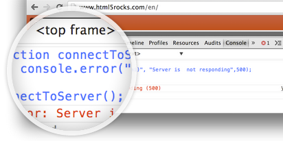
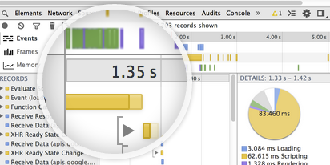

{{+content:partials.site}}
<div class="pillar-content">

  <h1>Chrome Developer Tools</h1>
  
  <section class="article-list g-section">
    <article class="new">
    <h4 class="label">Styles & the DOM</h4>
    <h2>Editing Styles and the DOM</h2>
    <p>
      Use DevTools to do real-time editing of your web page.  You can edit the DOM directly or the CSS Style and see your changes rendered immediately.
    </p>
    <p><a href="docs/dom-and-styles.html">Learn more</a></p>
    
    </article>
    
    <article class="new">
    <h4 class="label">Mobile DevTools</h4>
    <h2>Remote Debugging on Android</h2>
    <p>
      DevTools now has the ability to access your device directly in DevTools.  Just plug it in over USB and you can debug and edit a page on your dev machine without having to switch back and forth!
    </p>
    <p><a href="docs/remote-debugging.html">Learn more</a></p>
    
    </article>

    <article>
    <h4 class="label">Command-line debugging</h4>
    <h2>Using the console</h2>
    <p>
      The Javascript console in DevTools can be used to debug your Javascript code and log diagnostics, or you can also just use it as a shell to try out Javascript commands and interact with your website.
    </p>
    <p><a href="docs/console.html">Learn more</a></p>
    
    </article>

    <article>
    <h4 class="label">Performance and Profiling</h4>
    <h2>Performance Profiling: Timelines</h2>
    <p>
      Having trouble with your site running slow?  Find out how long the various parts of your pages (loading events, scripting, rendering, painting) take using the Timeline.
    </p>
    <p><a href="docs/timeline.html">Learn more</a></p>
    
    </article>
    
    <article>
    <h4 class="label">Performance and Profiling</h4>
    <h2>Performance Profiling: Javascript CPU Profiler</h2>
    <p>
      Find out how much CPU is being spent on your various Javascript functions with the Javascript CPU Profiler.
    </p>
    <p><a href="docs/cpu-profiling.html">Learn more</a></p>
    
    </article>
    
    <article>
    <h4 class="label">Performance and Profiling</h4>
    <h2>Flame Charts</h2>
    <p>
      Flame charts show you a visualization of the call stack of your Javascript functions, and you can quickly find out how long each individual call takes.
    </p>
    <p><a href="docs/flame-charts.html">Learn more</a></p>
    
    </article>
    
    <div class="load-more-articles">
      <a href="" class="nav-arrow down-arrow">More articles</a>
    </div>

  </section>

  <section class="g-section g-tpl-33-67" id="further-resources">
    <h2>Further Resources</h2>
    <div class="g-unit g-first">
      <article class="g-content">
        <h2 class="school">Code School</h2>
        <p>Explore and master the DevTools with our free "discover DevTools" courses. Nullam ultrices, dramt tempus vulputate egestas.</p>
        <p><a href="">Learn more</a></p>
      </article>
    </div>
    <div class="g-unit">
      <div class="g-section g-tpl-50-50">
        <div class="g-unit g-first">
          <article class="g-content">
            <h2 class="chat">Get Involved</h2>
            <p>Summit a bug or a feature request on DevTools, and help the community get better. Ultrices, diem5 ternpusvulputate egestas, eros pede</p>
            <p><a href="">Learn more</a></p>
          </article>
        </div>
        <div class="g-unit g-last">
          <article class="g-content">
            <h2 class="puzzle">Debug Extensions</h2>
             <p>Looking to use the DevTools to debug Chrome extensions? Watch our videos for more info. Nullam ultrices, to diem  ternpus vulputate.</p>
            <p><a href="">Learn more</a></p>
          </article>
        </div>
      </div>
    </div>
  </section>

</div>
{{/partials.site}}
